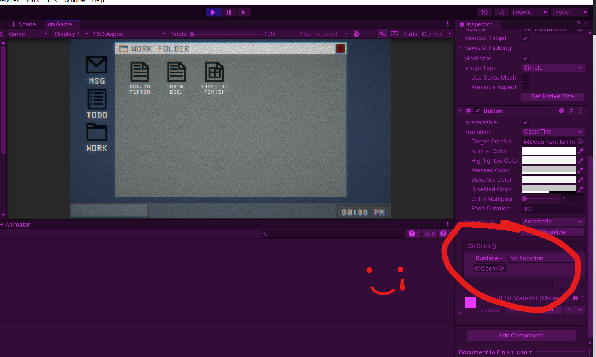
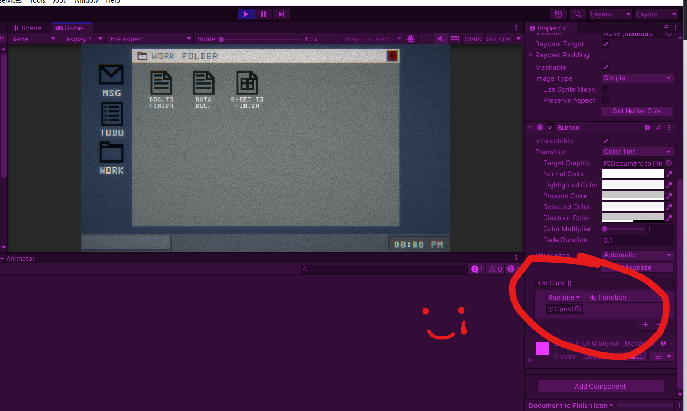
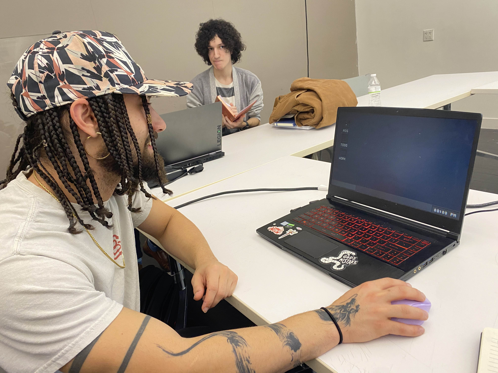
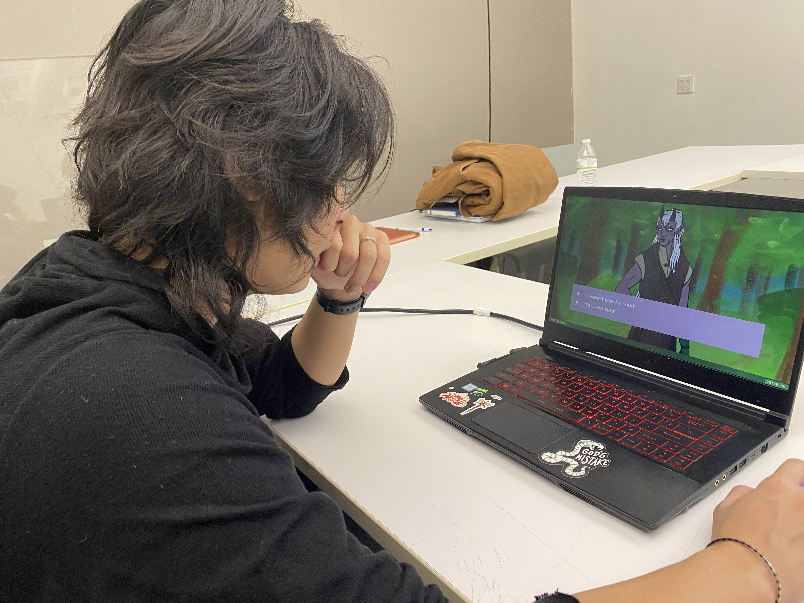
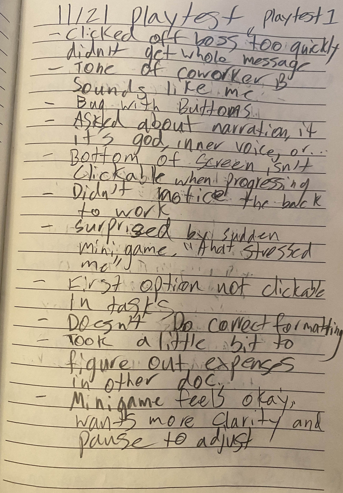
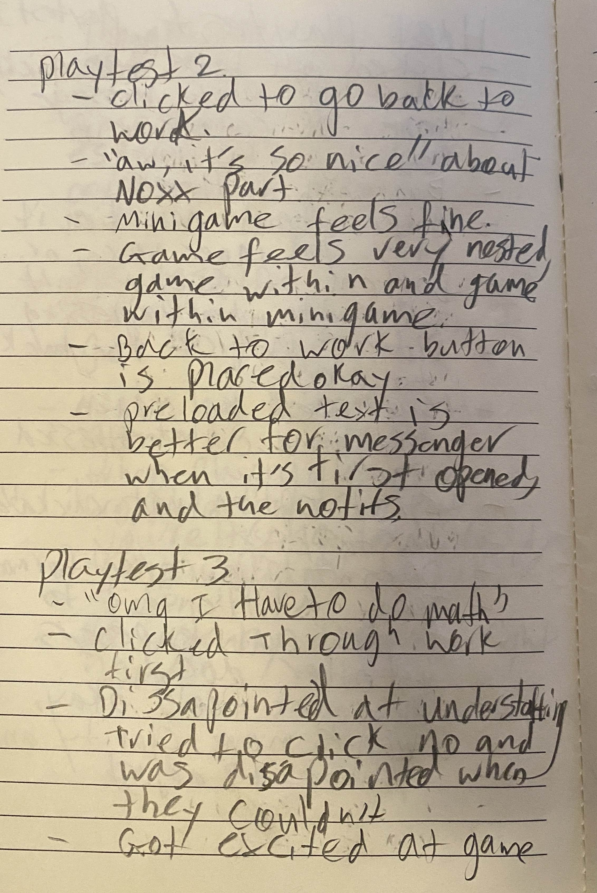
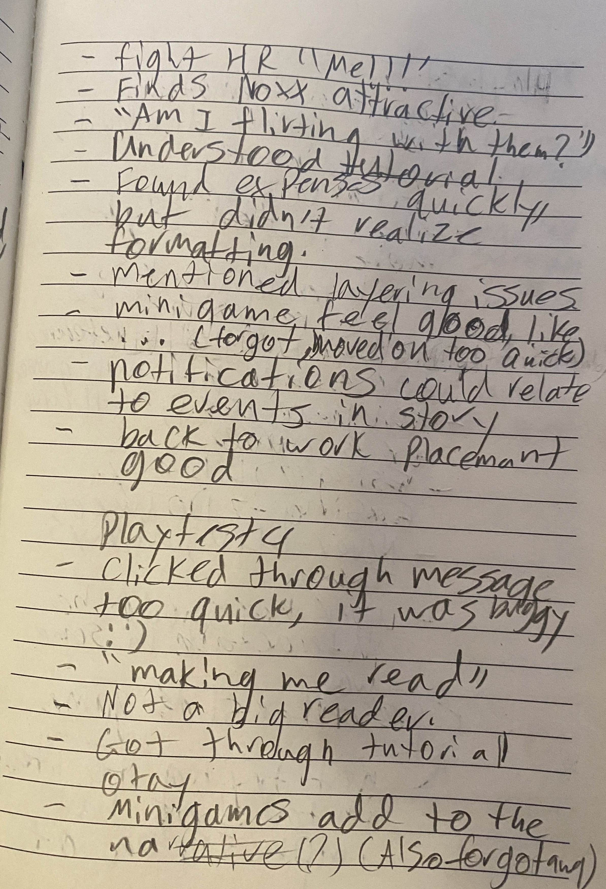
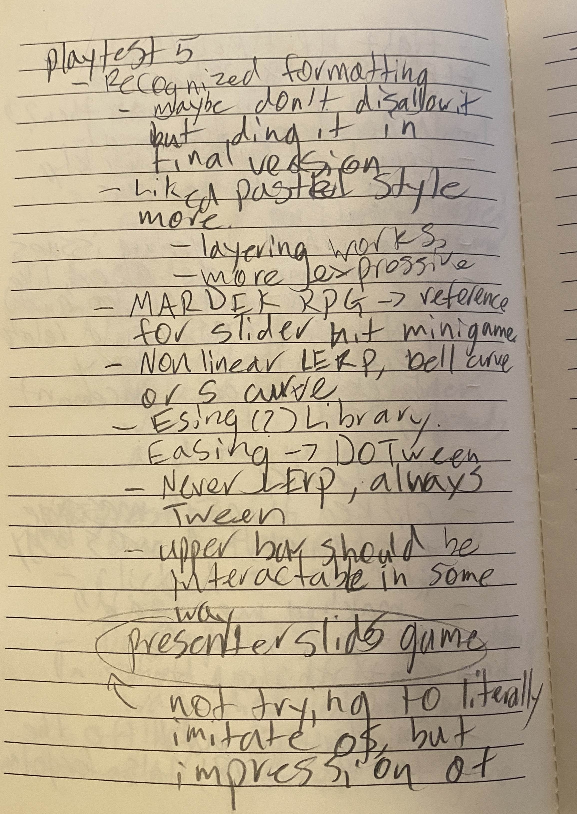
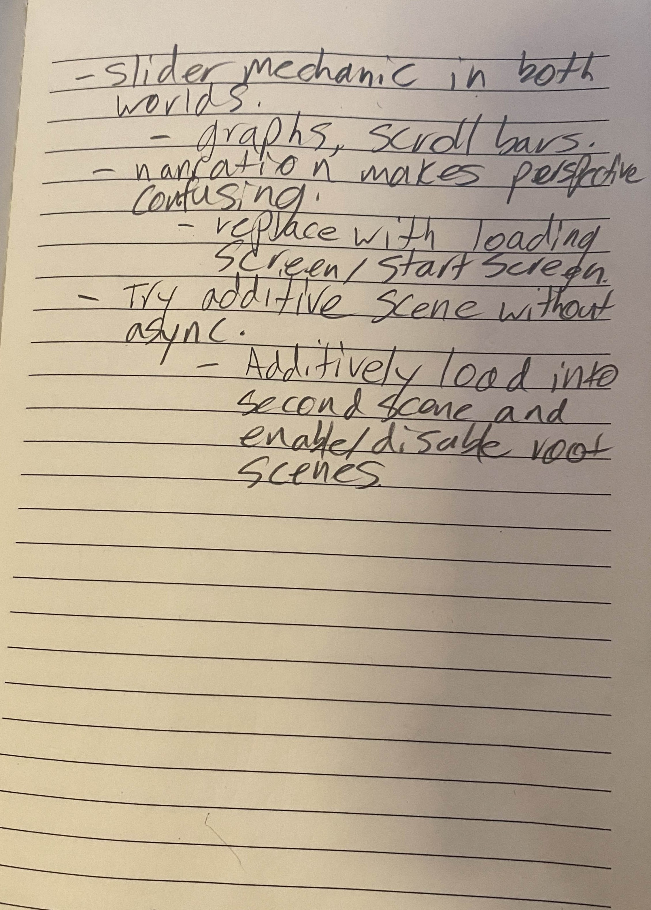

By this point in the semester, I feel that most of my bigger questions regarding fundamental elements of the
game have
more or less been answered, and I intended to further polish smaller aspects within the game to get more
feedback on the
game feel, and how different types of minigames contributed to different play experiences. Initially, my
main goal was
to figure out how to seamlessly transition back and forth between the two scenes, allowing the player to
return back to
exactly where they left off. However, I wasn’t able to figure this out in time, and in fact ended up kind of
making a
mess out of my prototype, which I had to spend some time undoing so that I could get it back into a playable
state. A
mistake on my part was not deciding to use version control, but I think in part I hadn’t expected to get so
invested in
one singular prototype that version control would be necessary. A good thing to learn from, perhaps.
I maybe should have taken some screenshots of the chaos for the sake of documentation, but I was so focused on trying to fix everything asap that I didn’t think to do so. But instead I have one minor unfixed element that I overlooked for the playest (I don’t even remember how or why the function would have been removed, but most likely I was moving around too many elements and simply got sloppy with it).
 What I started off trying to do was to use the async scene loading functions to have both scenes active at the same time, but I wasn’t quite able to get it to work out. I think what I struggled the most with was just puzzling out the documentation. I understood how to get both scenes loaded, but I didn’t understand how to switch between having one be “active” while the other acts invisible. No matter what I did, trying to switch active scenes while both were loaded resulted in a black screen. I tried looking up tutorials for how other people have tackled these issues, but many of the videos I came across seemed to either not be what I was looking for, or too complicated. Here are some of the videos I watched/skimmed: "Additive Async Multi-Scene Loading in Unity", "How to work with multiple scenes in Unity", "Change Unity Scenes, Keep Data", "EVERYTHING you need to know to SAVE and LOAD your game in Unity". Once I started running out of time, I then tried to just shove everything into one scene and hope that it would work at the very least just as a temporary solution. However, the way I had structured each scene made conflicting elements cause errors, like the multiple cameras, event systems, and instances of certain scripts I had used across both scenes. At this point, I was stumped, frustrated, and didn’t want to waste more time trying to untangle the mess. Instead I decided to undo the changes the best I could(though obviously some things were missed) and move onto something else so that I could have something new to show at the next playtest. Because of the lost time, I just ended up adding two elements to the game, one buggy and only partially working, and the other very simple.
The first element added was a more dynamic and interactive chat system. One big piece of feedback I had gotten during the last few playtests was that there was an expectation and desire for the chat interface to be more interactive. People wanted the conversation to feel two-sided, and I felt that there were some interesting things to do with that. Due to the time crunch, I only coded the boss conversation and the friend conversation to be different in these ways, given that I felt these were the two most important conversations, and at different ends of the spectrum in terms of the experience and feelings that these conversations were meant to bring. My goal was to allow for a more open conversation with the friend, while conversations with the boss would ultimately only lead to one kind of answer, no matter the choice.


What I had added was a coroutine that would allow the npc speech bubbles to send one after another, though
in testing
the wait ended up being a bit too long. Players wouldn’t realize and would click off the conversation, which
would bug
out the system, either stopping the flow of dialogue permanently or causing it to appear within different
conversations.
This was a frustrating bug, as I feel like I may have missed out on more nuanced feedback regarding the flow
of the
conversations and the content as a whole, with people instead focusing on the faulty system itself. However,
those who
had tested older versions confirmed that this felt more aligned with what they had been hoping for, and
seemed like it
was moving in the right direction despite the hiccups. Perhaps it could also be useful to try to add in a
“...” speech
bubble in between new messages, similar to how in real chatting systems there is usually some kind of
notification of
the other person typing. I could try testing this out and see whether the speed is really the issue, or if
it’s the lack
of this kind of indicator.
The other element I had added was a slider minigame to the more narrative, fantasy side of the prototype, symbolizing some sort of battle mechanic. With this, I was intending to test whether or not it was necessary to include more typically “game-like” elements into this visual novel styled portion. People, for the most part, seemed to react positively to the minigame, so at the very least it seems like it isn’t out of place among the all the text. I do want to experiment with this and test more variation if I have the chance to. I want to see if there are any other styles of minigames that would be interesting to include, such as maybe a point and click search, or a TTRPG inspired dice roll. I got some feedback to try overlapping certain minigame mechanics between the work side and the fantasy side, which does seem like a good idea so long as it doesn’t pull the two too closely together. Again, something to try to see if I can test more in the future. But overall, I do feel more inclined to try to include some sort of minigame, whereas before I was planning to stick with solely narrative as to make the split between the two sides as distinct as possible.
Specifically regarding the slider minigame though, I got some good feedback regarding the structure and presentation of it. Some people were kind of startled by the sudden appearance of the slider, and others weren’t expecting it to bounce and felt panic in trying to quickly hit the target. I also got some feedback regarding the movement of the bar, and how a less linear and more curved movement pattern would feel more exciting. This brought up even more questions, such as what different kinds of curves would convey through game feel, whether it could be beneficial to alternate curves, how varied I could make each iteration of the minigame and how the unique aspects could relate to some element within the story. I think there’s still a lot more that could be tested here, potentially alongside other types of minigames.
Overall, I am pretty disappointed with how this prototype came out. There were a bunch of factors, such as me trying to tackle a mechanic I had very little previous experience with, maybe feeling less motivated due to how satisfied I had felt with my last prototype, and having less time to put into this prototype compared to previous iterations. But regardless, as I got closer and closer to the playtest day, my biggest fear was not being able to get any new feedback, so I’m glad I was able to get something to test, as messy as it ended up being. However, now that it’s over, I feel I am left with more questions than answers, and more questions that I had to begin with. Maybe it’s a blessing in disguise, as now there is more to consider.
Side note on note taking during playtests: Something I’ve struggled with a bit in the past, but not quite so much as I did this time, is making sure I get the comments written down before the conversation moves beyond them. I think an element of this is that I struggle to participate in a conversation (react, emote, and respond) and write at the same time. As can be seen in some of my notes below, there are a few that I didn’t get to finish and ended up forgetting some details of as I went back to fill them in later. Most were pretty minor details, but it’s still pretty disappointing. I wonder if there are some techniques I can use in the future to avoid this happening, such as incorporating some kind of shorthand, or if this is just a skill that will come with time. I guess the simplest answer is to ask people to pause as I complete the notes, but I feel a bit awkward doing that, and as if I’m wasting people’s time in an environment where they have other projects to test… will need to think more on how to approach this!
Photos from Playtest:
Notes from Playtest:
I maybe should have taken some screenshots of the chaos for the sake of documentation, but I was so focused on trying to fix everything asap that I didn’t think to do so. But instead I have one minor unfixed element that I overlooked for the playest (I don’t even remember how or why the function would have been removed, but most likely I was moving around too many elements and simply got sloppy with it).
 What I started off trying to do was to use the async scene loading functions to have both scenes active at the same time, but I wasn’t quite able to get it to work out. I think what I struggled the most with was just puzzling out the documentation. I understood how to get both scenes loaded, but I didn’t understand how to switch between having one be “active” while the other acts invisible. No matter what I did, trying to switch active scenes while both were loaded resulted in a black screen. I tried looking up tutorials for how other people have tackled these issues, but many of the videos I came across seemed to either not be what I was looking for, or too complicated. Here are some of the videos I watched/skimmed: "Additive Async Multi-Scene Loading in Unity", "How to work with multiple scenes in Unity", "Change Unity Scenes, Keep Data", "EVERYTHING you need to know to SAVE and LOAD your game in Unity". Once I started running out of time, I then tried to just shove everything into one scene and hope that it would work at the very least just as a temporary solution. However, the way I had structured each scene made conflicting elements cause errors, like the multiple cameras, event systems, and instances of certain scripts I had used across both scenes. At this point, I was stumped, frustrated, and didn’t want to waste more time trying to untangle the mess. Instead I decided to undo the changes the best I could(though obviously some things were missed) and move onto something else so that I could have something new to show at the next playtest. Because of the lost time, I just ended up adding two elements to the game, one buggy and only partially working, and the other very simple.
The first element added was a more dynamic and interactive chat system. One big piece of feedback I had gotten during the last few playtests was that there was an expectation and desire for the chat interface to be more interactive. People wanted the conversation to feel two-sided, and I felt that there were some interesting things to do with that. Due to the time crunch, I only coded the boss conversation and the friend conversation to be different in these ways, given that I felt these were the two most important conversations, and at different ends of the spectrum in terms of the experience and feelings that these conversations were meant to bring. My goal was to allow for a more open conversation with the friend, while conversations with the boss would ultimately only lead to one kind of answer, no matter the choice.
The other element I had added was a slider minigame to the more narrative, fantasy side of the prototype, symbolizing some sort of battle mechanic. With this, I was intending to test whether or not it was necessary to include more typically “game-like” elements into this visual novel styled portion. People, for the most part, seemed to react positively to the minigame, so at the very least it seems like it isn’t out of place among the all the text. I do want to experiment with this and test more variation if I have the chance to. I want to see if there are any other styles of minigames that would be interesting to include, such as maybe a point and click search, or a TTRPG inspired dice roll. I got some feedback to try overlapping certain minigame mechanics between the work side and the fantasy side, which does seem like a good idea so long as it doesn’t pull the two too closely together. Again, something to try to see if I can test more in the future. But overall, I do feel more inclined to try to include some sort of minigame, whereas before I was planning to stick with solely narrative as to make the split between the two sides as distinct as possible.
Specifically regarding the slider minigame though, I got some good feedback regarding the structure and presentation of it. Some people were kind of startled by the sudden appearance of the slider, and others weren’t expecting it to bounce and felt panic in trying to quickly hit the target. I also got some feedback regarding the movement of the bar, and how a less linear and more curved movement pattern would feel more exciting. This brought up even more questions, such as what different kinds of curves would convey through game feel, whether it could be beneficial to alternate curves, how varied I could make each iteration of the minigame and how the unique aspects could relate to some element within the story. I think there’s still a lot more that could be tested here, potentially alongside other types of minigames.
Overall, I am pretty disappointed with how this prototype came out. There were a bunch of factors, such as me trying to tackle a mechanic I had very little previous experience with, maybe feeling less motivated due to how satisfied I had felt with my last prototype, and having less time to put into this prototype compared to previous iterations. But regardless, as I got closer and closer to the playtest day, my biggest fear was not being able to get any new feedback, so I’m glad I was able to get something to test, as messy as it ended up being. However, now that it’s over, I feel I am left with more questions than answers, and more questions that I had to begin with. Maybe it’s a blessing in disguise, as now there is more to consider.
Side note on note taking during playtests: Something I’ve struggled with a bit in the past, but not quite so much as I did this time, is making sure I get the comments written down before the conversation moves beyond them. I think an element of this is that I struggle to participate in a conversation (react, emote, and respond) and write at the same time. As can be seen in some of my notes below, there are a few that I didn’t get to finish and ended up forgetting some details of as I went back to fill them in later. Most were pretty minor details, but it’s still pretty disappointing. I wonder if there are some techniques I can use in the future to avoid this happening, such as incorporating some kind of shorthand, or if this is just a skill that will come with time. I guess the simplest answer is to ask people to pause as I complete the notes, but I feel a bit awkward doing that, and as if I’m wasting people’s time in an environment where they have other projects to test… will need to think more on how to approach this!
Photos from Playtest:


Notes from Playtest:




